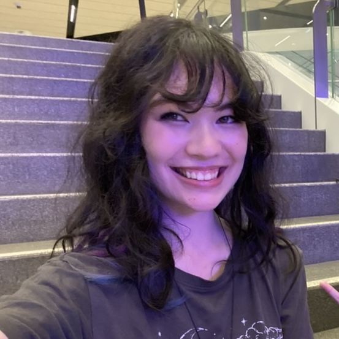

hi! ☺
i'm nina, a 3rd year games development student at the university of technology sydney! when working in games, my main role is a programmer but i also enjoy working on game design and marketing aspects of a game. art is definitely not my strong suit, but i also do not mind giving it a go!
overall my goal is to create a safe and inclusive space for underrepresented groups in games development and technology alike! i think that throughout my life, i have had a deep-rooted belief that i was not supposed to be in these spaces because there was nobody that i could look toward as a role model, but i hope to become that role model for that version of me! i hope that everyone can feel comfortable and safe in these spaces and feel like they have just as good of a chance of making it as anybody else!
i also have loved and valued education throughout my life and love teaching and learning from others. this can be reflected in some of the work i have done as a volunteer in the girls programming network where i have taught high-school aged female and gender diverse students to code in python! i also hope to branch out into other ways of teaching others to spread my love of coding to everyone!!
i also love sharing and promoting the games development community! currently i am part of the marketing subcommittee of playmakers, the UTS games development society. in this role i help create videos and marketing content which i believe helps to uplift developers in the community :) one of my bigger contributions were the interviews at our monthly playmakers arcade event where we interview indie game developers showing off their games which not only helps to provide aspiring developers knowledge about the industry, but also serves as a way to promote developers hard work!